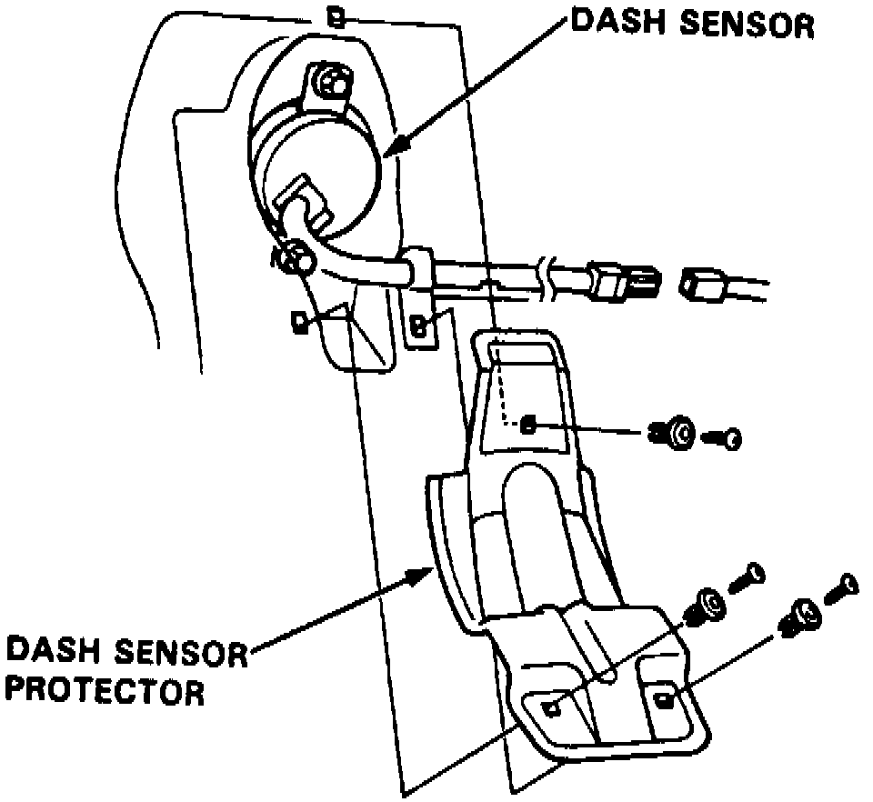

Impact Sensor: Service and Repair
Warning: Prior to performing service procedure, disarm SRS as outlined under Technician Safety Information. Failure to disarm SRS could result in system deployment and personal injury. SRS electrical wiring can be identified by a yellow outer protective coating.REMOVAL
Fig. 20 Righthand Side Dash Sensor Installation:

1. To remove lefthand side dash sensor, proceed as follows:
a. Remove foot rest and door sill molding, then pull carpeting back.
b. Remove sensor cover attaching screws, then remove cover.
c. Disconnect electrical connector, then remove two dash sensor attaching bolts and dash sensor, Fig. 20.
2. To remove righthand side dash sensor, proceed as follows:
a. Remove door sill molding, then pull carpeting back.
b. Remove sensor cover attaching screws, then remove cover.
c. Disconnect electrical connector, then remove two dash sensor attaching bolts and dash sensor.
INSTALLATION
1. Ensure battery cables are disconnected and red short connector is connected to air bag electrical connector.
2. To install lefthand side dash sensor, proceed as follows:
a. Install dash sensor and two attaching bolts, Fig. 20. Tighten attaching bolts to specifications.
b. Connect dash sensor electrical connector.
c. Install sensor cover and two attaching screws.
d. Position carpeting back, then install door sill molding and foot rest.
3. To install righthand side dash sensor, proceed as follows:
a. Install dash sensor and two attaching bolts, Fig. 20. Tighten attaching bolts to specifications.
b. Connect dash sensor electrical connector.
c. Install sensor cover and two attaching screws.
d. Position carpeting and install door sill molding.